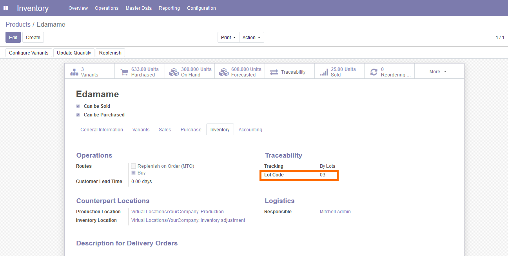
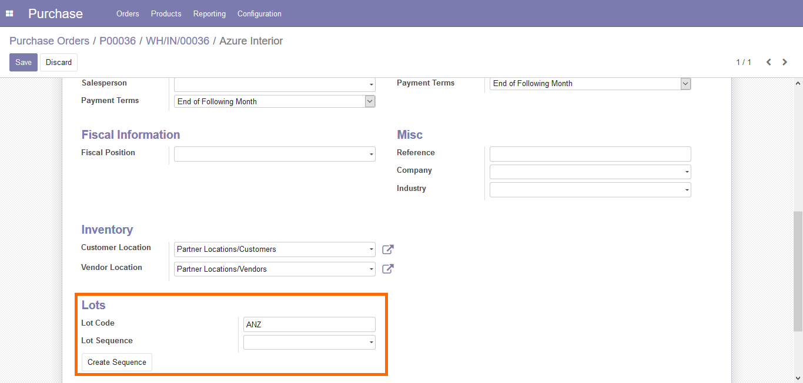
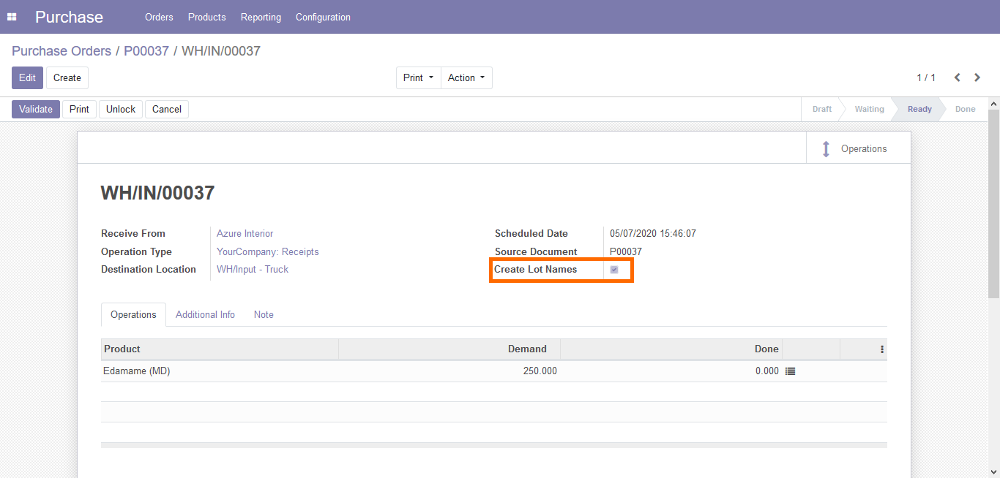
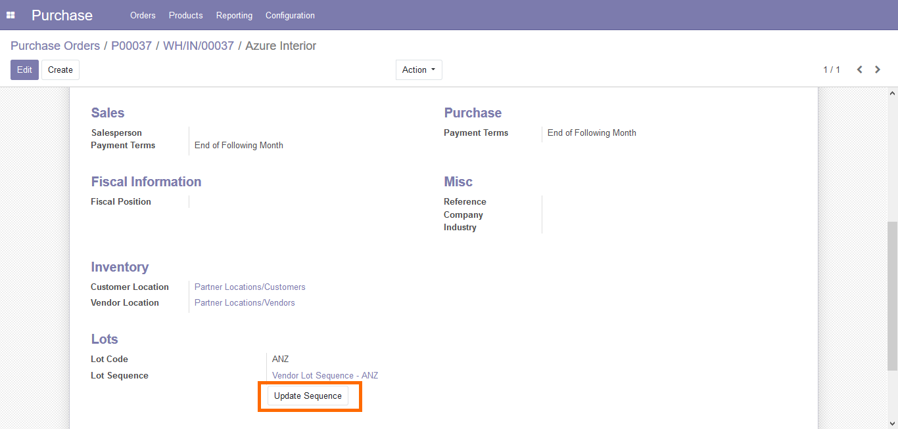

Automatic Creation of Lot Numbers
Configuration & Usage
- Enter Product "Lot Code".

- Enter Vendor "Lot Code", either enter an existing "Sequence"
or use button "Create Sequence" to create a new sequence for this vendor (recommended).

- In an incomming stock.picking use the checkbox "Create Lot Names" to have the Lot
names automatically created if no Lots where entered in the "Detailed Operations" form.

- To change the sequence number for a Vendor use the "Update Sequence" button.

Quality Control
Configuration & Usage
- Create all the required Quality Points Inventory->Configuration->Stock Quality Points.
- Create all the required Quality Templates Inventory->Configuration->Stock Quality Templates.
- You will be able to enter Quality Checks on Serial Products in Internal stock.pickings.